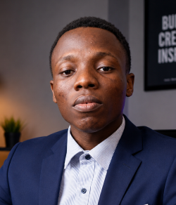

JOSEPH CHUKWUNAZAM KELVIN | WDD130

Hello! My name is Joseph Chukwunazam Kelvin, and I am from Rivers State, Nigeria. I am
passionate
about technology, creativity, and continuous learning. I enjoy
programming, graphic
design, and 3D animation,
and I am always looking for opportunities to improve my
skills and build real-world projects. My goal is to
become a successful software
developer and entrepreneur by creating innovative digital
solutions that solve real problems.
I believe in growing through consistent learning, hard work, and perseverance. In my
free time, I enjoy exploring new
technologie and working on personal projects that
help me develop both my technical and creative abilities.